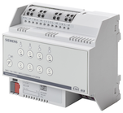
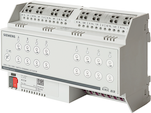
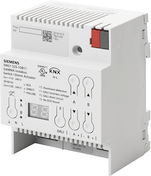

Switching / dimming actuators product description
开关执行器（继电器）是 KNX 设备。总线通过总线端子块连接。开关执行器可以切换电阻性负载（例如电加热器、白炽灯、高压卤素灯）、感性负载（例如电机、带有中间传统变压器的低压卤素灯）或电容性负载（例如带有中间电子变压器的低压卤素灯）。
 | N 536D31, 开关/dimming执行器
Order number: 5WG1 536-1DB31 下载数据表：5WG15361DB31 |
 | N 536D51, 开关/dimming执行器
Order number: 5WG1 536-1DB51 下载数据表：5WG15361DB51 |
 | N 525D11, 开关/dimming执行器
Order number: 5WG1525-1DB11 下载数据表：5WG15251DB11 |